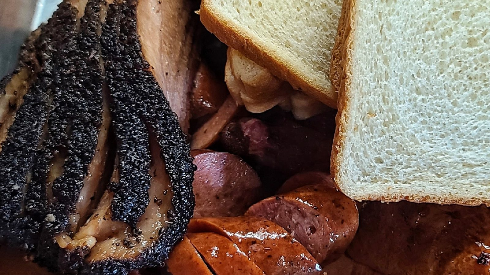

Brisket and sausage
Peppery sliced brisket, with sausage on the side.


Texas BBQ · Military Dr, San Antonio
Smoked brisket, moist turkey, ribs and homestyle sides, served family style.
Order at the register, food at your table
Smoked meats, plates and sides.
Peppery sliced brisket, with sausage on the side.
Moist, flavorful turkey on one, two or three meat plates with two sides and bread.

Brisket nachos and loaded potatoes under queso, pico and jalapeños.


4.3943 Google reviews
Everything was great. Turkey was moist and flavorful. Brisket was perfect with great flavor. The Mac n cheese and cream corn were awesome. Wife loved her brisket nachos!!!!
I'm from Arcola, TX. This place has the small town vibe & great 90s country music playing. I felt at home, the staff was great and small town courteous & welcoming and the food get a 10 out of 10. My wife and I have found our new Barbecue restaurant. My wife got her favorite marbled brisket and cream corn and I had my favorite stuffed spud with pulled pork.
I’ve always passed by, and today we finally decided to stop in before the football game! The restaurant has plenty of spacious indoor seating and weekly specials. We both ordered the 1-meat plate, which comes with bread and two sides, and I also got a 1/2 lb of pork ribs. Everything was delicious, but the sweet potato casserole was definitely the highlight! We really enjoyed everything and will definitely be back!

Our story
A family barbecue restaurant. Brisket, turkey, ribs, pulled pork and sausage come with sides, bread, pickles and onions.
The red and cream sign says Drive Thru. Inside are string lights, a gingham dining room and weekly specials.
Visit
807 SE Military Dr, San Antonio, TX 78214
Closed Mondays. Weekly specials are posted on their Facebook page.